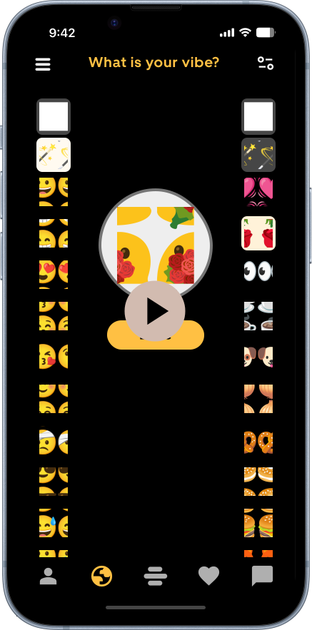
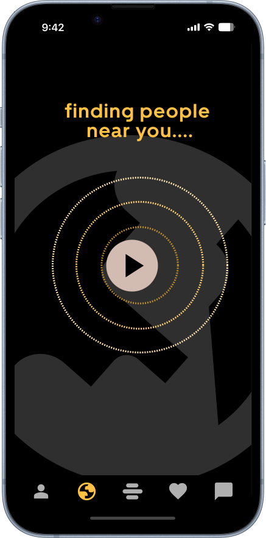
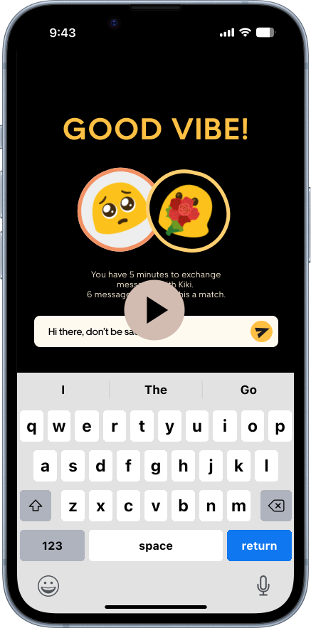
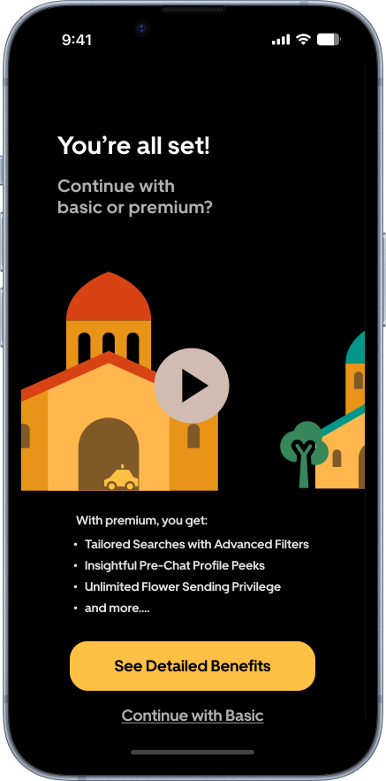
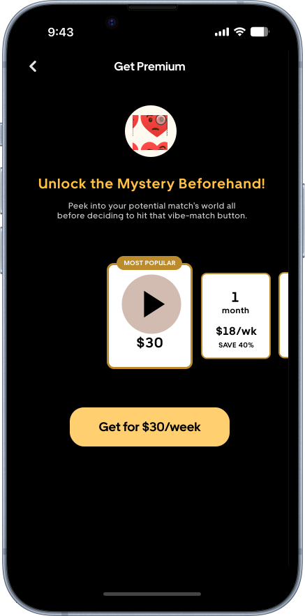
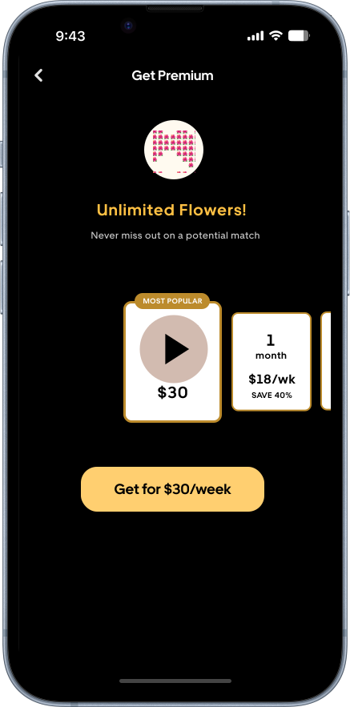

内容导航
1个月(2024年春季学期)
交互设计
用户界面设计
Bumble约会应用
导师：Audlyn Matthews， Sinan Goral
个人项目

项目概述
一个基于地理位置的地图功能
这个项目开始创建Vibely，一个Bumble约会应用内的地图功能，旨在通过利用实时位置服务来改变用户的联系方式。目的是增强数字互动体验。
通过允许用户创建和自定义能反映他们心情或喜好活动的头像，并配以独特的标语，Vibely为Bumble的个人资料添加了一个全新的个人表达维度。这个互动地图以动画头像的形式展示附近的用户，让数字空间感觉更加真实和有联系。
我的角色
产品/UI/交互设计
作为一个独立的团队，我的角色涵盖了设计的各个方面：
- 产品设计：定义Vibely的功能和特点，如头像定制、基于实时位置的互动和通知系统。这需要理解用户需求和商业目标，以开发出一个令人向往的产品。
- 用户界面设计： 打造Vibely的视觉元素，确保设计直观且符合Bumble的品牌特性。这包括色彩、版式、图标以及地图功能和头像定制选项的整体布局。
- 交互设计： 开发用户与Vibely互动的动态方面，从点击头像发起聊天到接收附近提醒。我的重点是创造一个无缝衔接、吸引人的用户旅程，鼓励积极参与并促进真实联系。
- 用户研究：开展初步的用户访谈和迭代的用户测试。
1. 一种怀旧而新颖的线上相遇方式
头像定制
用户根据自己当前的心情或活动喜好，通过头像和标语来个性化自己的在线形象。
互动地图
一个简化的数字地图以头像的形式显示附近的用户，营造出一种社区感和亲近感。
直接互动
点击一个头像，用户就会进入一个5分钟的聊天，模拟现实世界中互动的刺激感。
对话里程碑
互发三轮信息后就可以解锁完整的个人资料，鼓励有意义的交流。

2. 用户转化?不如说是用户说服!
增强的功能如提前查看个人资料、应用高级筛选以及发送额外的鲜花，提供了更深入的了解和联系潜力。用户流程经过精心设计，嵌入了转化点：
新手引导
用户在访问Vibely时，会预先了解到Premium会员的3个好处。
高级筛选
提供升级以获得更精细搜索能力的选项。
个人资料预览
付费用户可在发起聊天前查看个人资料，享有优势。
额外的鲜花
用户可以购买额外的"感兴趣"代币，发送给潜在的匹配对象。
3. 用户厌倦了刷刷刷的模式

数据驱动的设计决策
这个探索阶段包括深入分析现有的用户行为模式、偏好以及在线约会的传统框架内固有的局限性。这一阶段的主要活动包括全面的头脑风暴会议，旨在激发创意;深入的竞品分析以了解市场格局;以及初步概念创意的开发。这些创意随后经过迭代反馈循环，从而完善用户流程和Vibely的整体概念创意。
除了定性见解，我还进行了用户数据的探索性分析，以进一步指导我的方法。这一分析揭示了两个关键见解，塑造了Vibely的开发：
转化率趋势：随着时间的推移，转化率出现了明显下降，表明随着用户继续使用该应用，用户参与度或兴趣可能出现了流失。这一趋势凸显了对一个能重新激发用户兴趣和参与度的功能的需求。这为引入像Vibely这样的创新功能提供了有力的理由。
用户互动对转化的影响：数据显示，互动次数与转化率之间存在正相关关系。更频繁与他人互动的用户更有可能转化为付费服务。这一见解强调了设计Vibely以促进和鼓励用户之间更多互动的重要性，强化了更动态、更吸引人的功能可以推动更高转化率的概念。
有了这些见解，Vibely的设计和开发旨在提升Bumble内用户互动的质量，并解决用户参与度和转化率方面识别出的趋势，确保这一新功能能够为用户体验和业务指标做出积极贡献。

用地理位置重塑约会应用体验
设计过程的每一步都以提升用户体验和促进更大的参与度为锚点。从头像定制的个人化触感到实时通知的即时性，Vibely的每一个方面都经过仔细审视，以确保它能与用户的需求产生共鸣，并与Bumble的战略愿景保持一致。我一直注意不断完善设计简报，整合用户访谈中的新见解，确保项目保持正轨，不会成为我个人偏见的反映。例如，引入表情头像和系统生成的化名，就是一个战略举措，旨在保护隐私的同时，营造一种社区感，增强用户体验的乐趣。
在解决Bumble新用户面临的独特挑战时，尤其是那些生活在小城市或者不愿意投资高级功能的用户，问题框定的重点方法至关重要。识别出的核心问题包括缺乏匹配和对应用功能的探索有限。在用户基数自然较小的小城镇，应用的标准推荐算法(优先考虑地理邻近性)可能无法很好地为这些用户服务。此外，对投资聚光灯等高级功能的犹豫，再加上在没有成功匹配的情况下耗尽喜欢的挫败感，进一步加剧了这一挑战。
为了在利用地理位置功能的同时解决这些问题，我们头脑风暴出了四个创新的概念创意：
- Buzz Alerts：这个功能将利用实时通知，在高度匹配的潜在对象在附近时提醒用户，增强联系的自发性和相关性。
- Mood-Based Matching：超越简单的地理邻近，这个概念提出根据用户当前的心情或期望的活动来匹配用户，为匹配过程增加深度。
- Flash Gather：旨在促进即时的社交互动，Flash Gather将使用户能够与附近有相似兴趣的会员组织或加入短时间通知的聚会，非常适合即兴的咖啡休息或午餐约会。
- Path Crosser：通过突出显示你在一天中路径交叉的用户，这个功能旨在创造一种熟悉感和偶然性，可能使数字联系感觉更加扎根于现实世界。
经过对可行性的考虑，我们决定将前三个概念(Buzz Alerts、Mood-Based Matching和Flash Gather)的优势有机结合到一个原型中。
事实证明，隐私很重要
在打造Vibely独特吸引力的过程中，一个关键决策是引入一个简化的数字地图，通过头像展示附近的用户。这一创新功能旨在使Vibely与传统约会应用区别开来，为用户在当地环境中的互动提供新的视角。作为补充，我们集成了通知功能，当匹配对象在半英里范围内时提醒用户，为潜在的见面注入了一种即时性和刺激感。
在设计过程中，我与用户联系，收集他们对新生的Vibely功能的想法。我匹配到的一位用户Hannah(化名，下同)分享了她对该功能的兴奋之情，她的信息充满了对实时地图概念的热情。 "看到谁在附近感觉像是网上约会的新体验。它让联系感觉更加真实，"她写道。
尽管反响不错，但很明显，根据邻近度将用户头像可视化并不像预期的那样直观。为了解决这个问题，我通过结合动态加载动画和在主地图视图上更突出地显示距离来优化用户界面。这些改进旨在阐明用户之间的空间关系。
在与另一位用户Alex的聊天中，关于接近提醒的对话出现了有趣的转折。他评论道： "当一个潜在的匹配对象就在拐角处时收到提醒，这可能正是我们需要的那种随性体验! 🤔" 这句话完美捕捉到了通知功能可能带来的兴奋之情。

正是与Matt的聊天让我对Vibely的一个互动机制产生了批判性的看法。Matt以其深思熟虑且详尽的信息给我留下了深刻印象，他对最初需要交换20条信息才能建立匹配的要求表示担忧。 "我倾向于写更长、更有意义的信息，" 他解释道： "在短短5分钟内达到20条信息的门槛，感觉有点令人生畏。这可能会从一开始就阻碍更深入的对话。"
这些与Bumble用户的线上对话提供了宝贵的见解。Hannah和Alex的热情验证了该功能在增强用户互动方面的新颖方法，而Matt的反馈则促使我们重新评估互动门槛，确保Vibely能够满足Bumble社区内各种沟通风格的需求。
为了进一步丰富用户体验并提高参与度，我从Duolingo寻求灵感，引入了交互式小工具和及时的通知。这些小工具能够动态地适应附近用户的氛围和当时的时间，创造出一个更加个性化和响应迅速的生态系统。
添加可选的标语输入直接来自用户的反馈。另一位测试者Raquel建议： "如果能有一点文字就好了，一些有趣或古怪的东西，展示我是怎样的人或我在寻找什么。" 这个功能让用户能够表达他们的意图或心情，而不仅仅局限于头像，为他们的数字形象增添了深度。从真实姓名转换为化名是另一个由用户反馈推动的关键变化。 "我喜欢一点神秘感，使用化名让人感觉更安全，也更有吸引力。"
新手引导体验也进行了改进。最初，一些用户如Linxi在没有指导的情况下很难全面掌握Vibely的功能。这促使我们引入了新手引导页面，简洁地传达该功能的本质以及如何使用它。
发送鲜花作为表达兴趣的概念源于我为用户流设置的一个充满趣味的场景，其中一个假设的角色Kay将她的化身设置为手持花束，遇到Allison并约她出去。Mason若有所思地说： "如果我真的能送出我在头像中拿着的那束花呢?" 这个想法引起了我的共鸣，呈现出一个新颖的转化点。我对此进行了反复探索，集成了一个允许用户相互发送虚拟鲜花的功能，为互动和参与增添了一层可能性。
每一次迭代都受到用户直接反馈的启发，针对他们的反馈提供创新解决方案，使Vibely逐步成为一个更直观、更吸引人、也更符合用户对有意义且动态联系的渴望的功能。
跨平台设计
Vibely设计的演变源于一种承诺，即超越快节奏的滑动式约会应用中常见的肤浅互动。这有助于引入一层真实感和联系，弥补了现代数字交互中缺失的部分。从传统地图过渡到更抽象、更用户友好的布局，目标是简化数字景观，创造一个感觉温馨、易于探索的空间。5分钟聊天这一主要交互模式是一次深思熟虑的努力，旨在为用户互动注入实时的兴奋和迅捷，鼓励超越表面联系的有意义的交流。

4. 设计系统、微交互、竞品和用户
潜入Vibely之旅绝非寻常，可谓一段奇妙的冒险。在探索约会应用的互动模式的同时，我很高兴能将学到的设计系统和设计原则付诸实践。
充分利用设计系统
回顾使用Uber的Base设计系统的经历，精心定义的配色系统为我节省了大量时间，简化了设计流程，确保了视觉一致性。然而，Base中缺乏图标是一个挑战。最后我不得不借助Google Material Symbols来填补这一空白。此外，将Base的元素与Bumble界面融合也并非易事，需要进行大量定制以符合Bumble的整体美学。这一经历凸显了在利用设计系统提高效率与灵活适应现有界面之间寻求平衡的重要性。
微交互的魔力
啊，在Vibely中注入一点微交互的魔力是多么令人兴奋!在许多情况下，我发现自己在"smart-animate"的细微魔力和"slide-in"的温柔滑动之间切换，所有这些都是为了追求完美流畅的用户体验。还有一个迷人的时刻，一辆小车从古朴的绿色宫殿驶向更加宏伟的红色宫殿，这是邀请用户进一步探索高级版的一种巧妙方式。这就像是在友好地推了用户一把："我们要不要再进一步?"
要求用户分享位置或为新功能投入更多精力，这本可能成为一个棘手的问题。然而，通过巧妙地编织这些微交互，原本可能引起用户犹豫的时刻变成了一种吸引人、近乎有趣的互动。这提醒我们，即使是最微小的触动也能让数字体验变得更加迷人。
与竞争对手共舞
在不参考竞争对手的情况下进行设计，感觉就像在没有安全网的情况下走钢丝——既刺激又令人生畏。我选择了人迹罕至的道路，将竞品分析放在了后面。这一策略收效颇丰，让我的创意源泉免受污染。当我最终审视竞争局面时(你好，Badoo，看看你基于心情的匹配方式!)，我已经掌握了一大堆原创点子。这种先构思后调研的方法是我在未来项目中要借鉴的。
倾听的艺术
一开始，真实地图功能的诱惑力几乎不可抗拒!作为一个习惯于对应用权限说"好"的人，我起初低估了隐私方面的危险信号。但是，与经验丰富的Bumble用户的交谈给了我宝贵的一课：隐私至关重要(事实证明，四分之三的用户都有同感)。这一顿悟促使我以创新的方式呈现地图，突显了一条黄金法则：用户反馈是指引创新之旅的北极星。这让我想起上学期在半自动驾驶汽车交互设计中的一点反思，即要在早期阶段就让用户参与进来——在Vibely的每个转折点上采纳用户见解至关重要，它将Vibely塑造成了一个真正属于用户、为用户服务的特色功能。
更多作品
链单车（BikeLink Pro）
BikeLink Pro不只是半自动驾驶电动自行车，它代表着全新的骑行体验。我基于以人为本的设计原则，设计了一系列用户界面和交互范例。

宠星球（PetSphere）
宠星球是一个充满活力的宠物社区社交平台，帮用户连接爱宠人士和靠谱服务，打造毛孩子们的专属乐园。我是Petsphere的UI设计师和全栈开发人员，负责从界面设计到功能开发的整个流程。